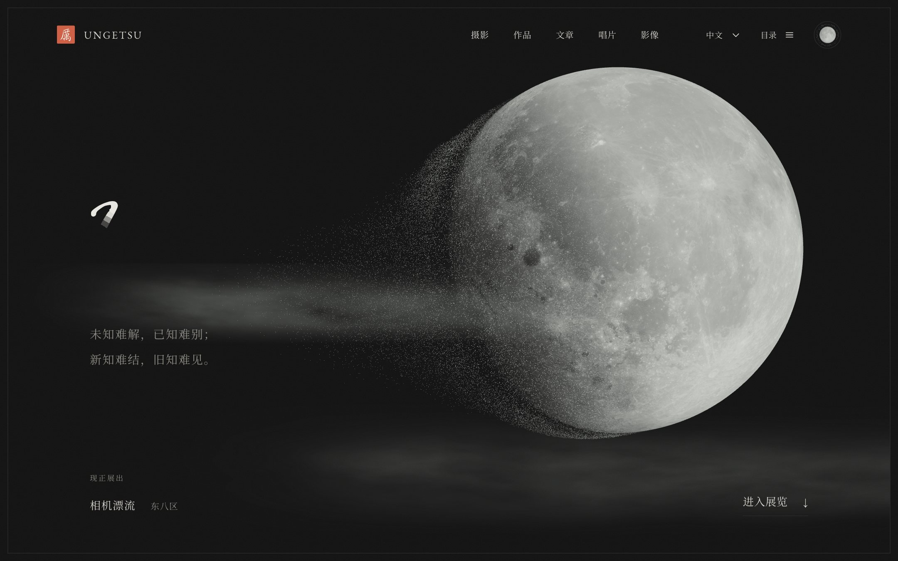
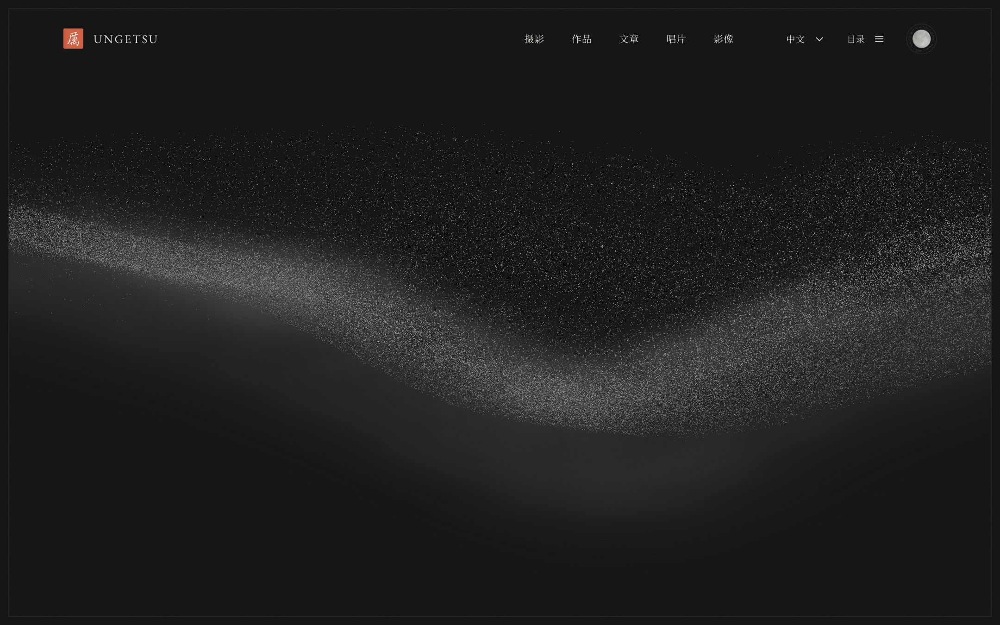
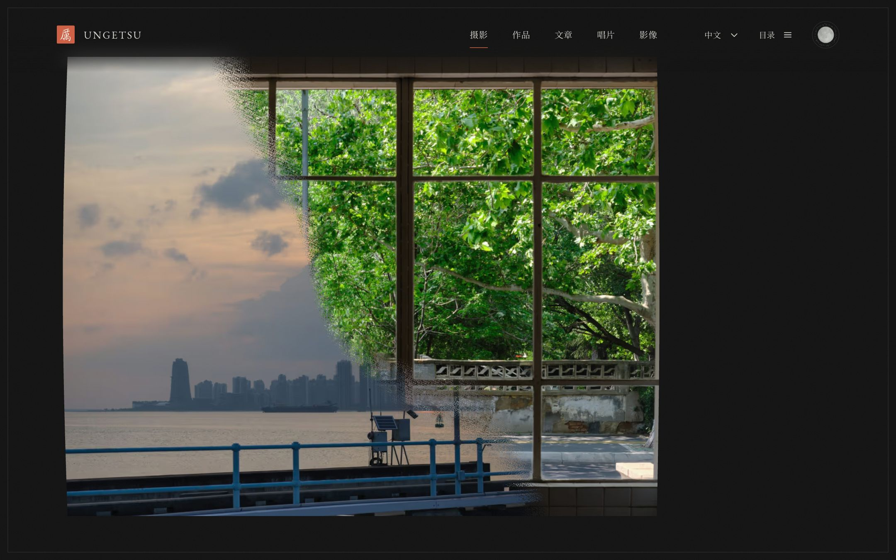
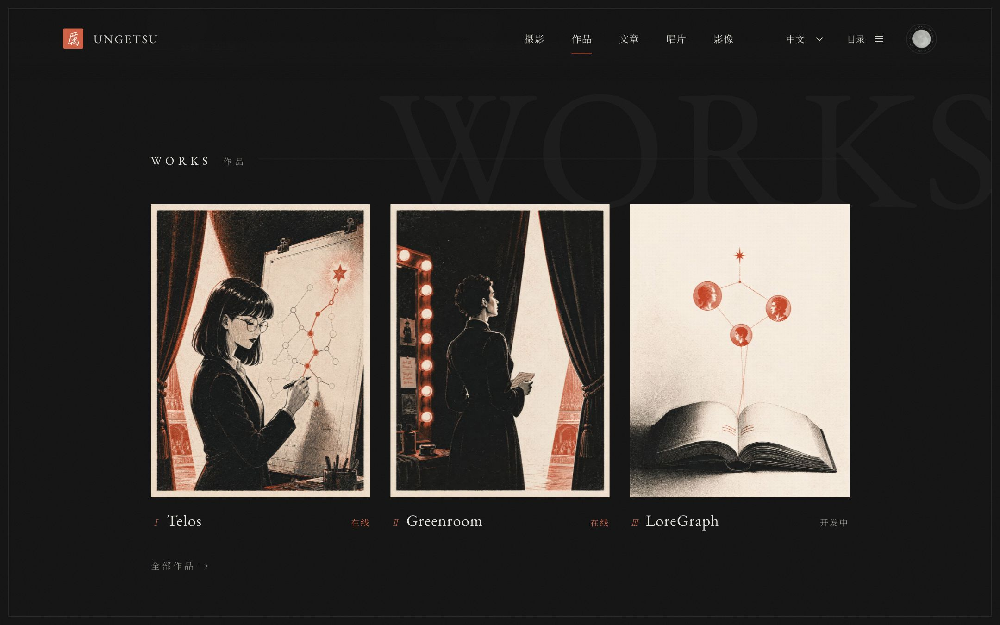
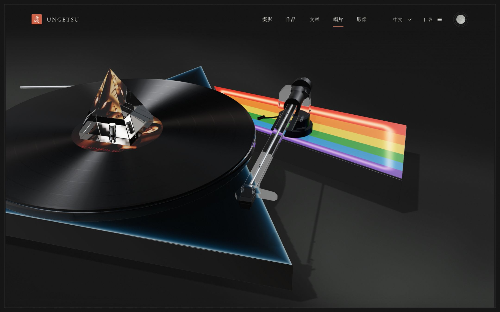
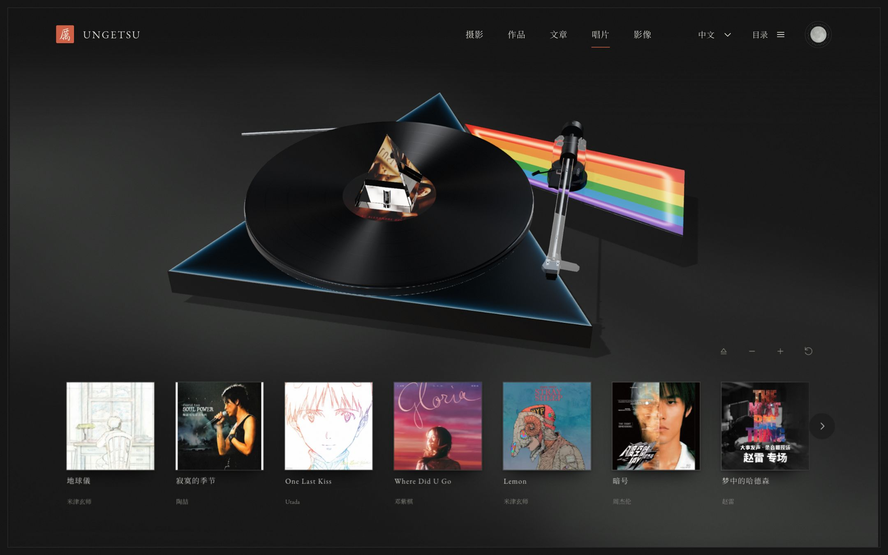
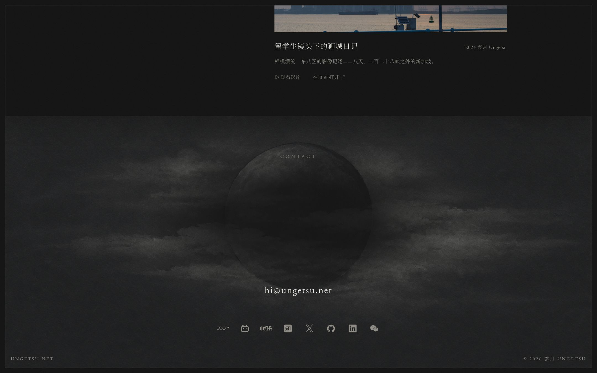

这不是观感。
下面每一个数值都来自对线上站点的真实抽取。
一个把「月亮消解成尘、尘落成照片」写进滚动条里的个人站。 拆解取到了它的双主题 token、真实字体分片、四条缓动曲线，以及最关键的那几段着色器原文—— 月面侵蚀、照片显影、落款书写的公式，都在下面可以亲手拖动。
INTENT定位与意图
这是一座个人美术馆，不是一张个人主页。
首页没有「关于我」，没有技能条，没有履历。它把五个身份——摄影、作品、文章、唱片、影像—— 做成五个展厅，然后在入口处放了一轮会自己消解的月亮。你必须先穿过那轮月亮，才能看到第一张照片。 这套结构上的取舍，是整个站最强的设计主张：先给气质，再给信息。
名字本身也是设计的一部分。ungetsu 即「雲月」，云与月既是品牌母题，也是全站唯一的视觉母题—— 首屏是月，页脚也是月；中间所有内容，是月亮消解后落下的尘。
三个层次，别看混
叙事层
首屏那 6 084px（1440 × 900 实测）的滚程里没有任何可点的内容，只有一轮月亮在被侵蚀。 它承担的是气质与门槛：愿意滚下去的人，才是它想要的读者。
展陈层
月亮散尽后，粒子聚成一张真实照片，接着 WebGL 把这张照片交接给 DOM 里的
<figure>。从这一帧起，页面从「作品」变回「文档」。
档案层
作品、文章、唱片、影像四节回到朴素的栅格与列表：衬线、发丝线、大写水印。 这里的克制是刻意的对照，让前面的铺张显得值。
它想给谁看
推断 从信息取舍看，目标读者是会滚到底的人：同行设计师、潜在合作方、 以及被一张照片留住的陌生人。站点把招聘向的硬信息（履历、技能）全部推到二级页， 首页只留下三件事：我拍什么、我做什么、怎么找到我。
实锤 结构化数据 schema.org/Person 里
knowsAbout 写的是「风光摄影、开源软件、AI 智能体、知识图谱」，
四项并列，没有主次——这与首页把摄影和作品并排陈列的版面判断一致。
COLOUR色彩系统
两套完整调色板，十个变量，一个朱砂。
实锤 站点在 :root[data-theme=light] 与
:root[data-theme=dark] 里各定义了十个同名变量，成对翻转。
首次访问强制进深色——内联脚本写着「先以墨色开卷，已保存的选择仍然优先」。
下面每一格都可点击复制。
DARK · 默认开卷
LIGHT · 宣纸
场景色是另一组变量
实锤 月亮与云不吃主题色，走的是 .gallery-entrance 上单独的四个变量。
这是个值得学的分层：UI 色与场景色分开命名，换主题时场景可以不跟着走。
| 变量 | 浅色 | 深色 | 作用 |
|---|---|---|---|
--ge-cloud | #555653 | #777a76 | 体积云的墨色 |
--ge-moon-light | #f6f4ef | #d2d5cf | 月面受光 |
--ge-moon-shade | #555653 | #252b29 | 月面背光 |
--ge-particle | #555653 | #bdc0b8 | 尘粒 |
实锤 场景的明暗判定不看主题名，而是直接读底色亮度：
uDark = paper.r < .1 ? 1 : 0。深色态 #121212 的红通道是 0.071，落在阈值下。
推断 这样写的好处是主题再加一套（比如「暮色」）也不用改着色器。
实锤 词频统计里 #000 出现 20 次居首，但它几乎全部来自阴影
rgba(0,0,0,x) 与唱片的黑胶渐变，不是品牌色。品牌色是 --accent，
在样式表里各只声明一次——这正是「高频 ≠ 重要」的典型例子。
TYPE字体系统
全站只有衬线，一个无衬线字符都没有露脸。
实锤 --font-sans 这个变量确实定义了，但在整份样式表里没有被任何规则消费。
真正在跑的是三支：拉丁用 EB Garamond，中文用 Noto Serif SC，日文用 Noto Serif JP。
下面的样张用的就是从站点下载的真实字体文件，不是同名 CDN 替身。
用于品牌字、章节英文标签、日期、邮箱。字距在章节标签上拉到 .32em，
在正文里回到 .02em——同一支字，靠字距切换「标牌」与「行文」两种身份。
首屏那两行题词就是这支字。中文衬线在深色底上最怕发灰，站点的解法是把标题色
--head #e8e6e0 提到比正文 --text #d9d7d0 更亮，
并给正文行高 2.0 到 2.2——靠留白而不是加粗来立骨架。
只为日文条目准备：唱片架上标了 lang="ja" 的曲目会切到
--font-ja，让日文汉字用日文字形（如「儀」的右下），不被中文字形同化。
这是全站最容易被忽略、也最见功力的一处排版判断。
五个字族变量，各有分工
| 变量 | 声明频次 | 栈 | 用途 |
|---|---|---|---|
--font-serif | 49 | EB Garamond, Noto Serif SC, Songti SC, STSong, SimSun | 正文与标题主力 |
--font-latin | 15 | EB Garamond, Georgia, Times New Roman | 纯拉丁：章节标签、水印、日期 |
--font-meta | 55 | EB Garamond, Noto Serif SC | 小号元信息，栈最短、回退最快 |
--font-ja | 2 | EB Garamond, Noto Serif JP, Noto Serif SC, Songti SC | 日文条目 |
--font-mono | 1 | ui-monospace, SFMono-Regular, Menlo… | 几乎不用，纯兜底 |
实锤 471 条 @font-face，全部带 unicode-range 分片、
全部 font-display:swap、全部自托管在 /fonts/ 下——没有走 Google Fonts CDN。
中文 101 片、日文 124 片是 Google Fonts 的标准切法，站点把产物搬回了自己域名。
推断 动机大概率是首屏确定性：自托管可以和月球贴图一起排预加载优先级，
也避开了第三方域名在部分网络下的抖动。
MOTION动效系统
四条曲线，两个时间尺度。
实锤 整份样式表里只出现四条 cubic-bezier，每条各一次声明、全站复用。
主缓动 --ease 是一条极端的 expo-out：前 20% 的时间跑完 80% 的距离，
尾巴长得几乎看不见结束——这正是「东西落到位、却不知道什么时候落的」那种高级感的来源。
--ease
cubic-bezier(.19,1,.22,1)
主缓动。主题换幕 .9s、画框换色 .9s、月相位移 .7s、卡片位移 .3s 全部用它。
--ease-out
cubic-bezier(0,0,.2,1)
标准减速。留给不需要「戏」的小过渡。
cubic-bezier(.16,1,.3,1)
胶片墙落位专用，时长 1.1s，每格延迟 index × .1s。
cubic-bezier(.34,1.5,.64,1)
唯一一条会过冲的曲线。推断 全站只用在一处极小的微交互上， 节制得近乎吝啬。
时长梯：慢层与快层
实锤 站点把时长切成两截：
UI 反馈 --t-ui .25s，内容入场 --t-content .8s。
叙事层的时长则完全不在这把尺子上——它们以秒计，甚至以「滚动距离」计。
| 时长 | 用在哪 | 出处 |
|---|---|---|
.25s | hover 变色、箭头位移、链接下划线 | --t-ui |
.26s | 唱头落针 | .tonearm .head |
.3s | 导航圆点缩放、唱片封面抬起 | .site-nav a:after |
.4s / .45s | 页面切换 vt-lift / vt-settle | View Transitions |
.7s | 主题图标月相移动 | .t-moon:before |
.8s | 内容入场、唱臂摆动（延迟 .24s） | --t-content |
.9s | 换主题时底色与画框边色同步过渡 | .curtain / .mat |
1.1s | 胶片墙每格落位 | .wall-arrived |
1.15s | 单个汉字点亮 | Web Animations |
1.8s | 宽幅照片交叉淡入 | .hero-slide |
2.4s | 主题按钮 hover 的流光环 arc-flow | infinite linear |
4.6s | 黑胶转一圈 m-spin（≈13 rpm，慢于 33⅓ 的写意值） | .disc |
6.4s | 落款书写一遍 | data-duration |
7s | 宽幅照片轮播间隔 | setTimeout 7e3 |
实锤 逐字点亮的节拍全部可读：每字 26ms 步进，
遇到 ，。！？ 加到 105ms，段与段之间再加 300ms，
单字动画 1150ms，缓动 cubic-bezier(.22,.61,.36,1)，
起始态 opacity .16 / translateY(.16em)。标点停顿这一条，是把中文的呼吸写进了代码。
观海听潮，落笔成尘。月既消解，照片始现。
节拍与缓动取自 home-late-motion.CO2yWLHu.js 原文；
示例文字由拆解者另写，未复用站点内容。原站这段在 IntersectionObserver
的 rootMargin: 0px 0px -16% 0px 触发，并在
prefers-reduced-motion 下直接跳到完成态。
MOON签名母题 · 月相消解
整站最贵的那一眼，是一段只有八行的 GLSL。
实锤 月亮不是视频，也不是序列帧，是 three.js r185 里的一颗球
（桌面 256 × 192 分段）配一支自写的 ShaderMaterial，
外加 480 × 360 = 172 800 个粒子。消解不靠透明度渐隐，
靠的是一条「侵蚀锋面」扫过球面：
// moon-material.D6ghfIzk.js —— 原文，未改一字
float lunarFront(vec3 localPoint,float albedo){
return .5+(localPoint.x*.927+localPoint.y*.375)*.35+(albedo-.6)*.22;
}
float lunarErosion(float progress){
return smoothstep(.27,.70,progress)*1.45-.2;
}
float lunarRelease(vec3 localPoint,float albedo,float progress){
float front=lunarFront(localPoint,albedo);
return smoothstep(front-.16,front+.16,lunarErosion(progress));
}读这三行能读出三件事。第一，(x*.927 + y*.375) 是一个固定方向向量——
侵蚀有方向，从左下往右上推，不是四面八方一起烂。第二，(albedo-.6)*.22
把月海先放走、高地后放走：暗的地方 albedo 低，front 更小，更早被锋面越过。
第三，smoothstep(front-.16, front+.16, …) 给锋面一个 0.32 宽的软带，
所以边缘是砂砾状的，不是一条刀切的线。
实锤 侵蚀进度并不等于滚动进度。滚动 0→1 只把
uProgress 从 .45 推到 .7
（lerp(.45,.7, min(1,p/.7)²)），并且月亮在 p > .72 时整颗隐藏，
剩下的全交给粒子。推断 这样做是为了让「实体」与「尘」的交接发生在
观众注意力最松的一段，交接痕迹因此看不见。
可跑 demo：真贴图 + 真公式
下面这块画布用的是站点真实的月球反照率贴图
/scene/directory-moon/albedo.jpg（2048，站点移动端用的那张），
以及上面三个函数的逐字移植，光向同样取 uLight = normalize(sin.48·cos.32, sin.48·sin.32, cos.48)。
拖动滑块就是拖动 uProgress。
与原站的差别：原站是 WebGL，月面是实体网格、尘是 GPU 粒子、云是三层体积雾 raymarch（桌面 44 步）；此处为了能在任何设备上跑，改成 Canvas 2D， 月面用逐像素重建、尘用 — 个点。 公式、贴图、颜色、光向完全相同，差的是精度与体量，不是做法。
尘是怎么飞的
实锤 粒子并不是「从月亮位置直线飞到照片位置」。
lunar-scene.Cpz5gDLB.js 里每颗尘要走三段：
一 · 起皮 peel
先沿法线离开球面 r × .045 × lift，同时加一个切向的
sin(lift·π) 摆动——先鼓起再脱落，像颜料从纸上翘边。
二 · 入流 stream
汇进 lunarStream()：一条 sin(x·7.1 + lane·.19 + t·.016)
的带状流，按 lane 分五道，z 向深度 210。这就是首屏那条横贯画面的银河。
三 · 落位 arrival
最后按 photoArrival(uv, progress) 归位到照片像素上，
路径带一个 sin(b·π)(1-b) 的弧形包络——两端为零，
所以反向滚动时轨迹依然平滑，不会抖。
实锤 另有 step(.995, seed.z) 一支约 0.5% 的粒子被标成 free，
永远不参与落位，只在背景里做环境尘。这类「留一点不听话的」细节，是气质的来源。
| 参数 | 桌面 | 移动 | 出处 |
|---|---|---|---|
| 粒子数 | 480 × 360 = 172 800 | 240 × 180 = 43 200 | lunar-scene |
| 球体分段 | 256 × 192 | 160 × 112 | SphereGeometry |
| 月球贴图 | 4096 webp | 2048 jpg | moon-material |
| 云 raymarch 步数 | 44 | 28 | 三层各一次 |
| 云渲染目标 | HalfFloat，视口 0.65 倍，预乘还原后再合成 | 避免暗边 | |
| 3D 噪声 | 64³，八度 4 / 8 / 16，权重 .57 / .28 / .15 | 一次生成、模块级缓存 | |
| 像素比上限 | 1.75 | 1.25 | GalleryEntrance |
| 随机源 | LCG 种子 21717，乘子 1664525，增量 1013904223 | 可复现 | |
推断 种子写死而不是 Math.random()，说明作者要的是
每次刷新完全一致的画面——这是把网页当作品而不是当应用的标志。
INK签名母题 · 落款书写
一个 <h1> 里没有文字，只有一支笔在写字。
实锤 首屏的 <h1> 是一段 529 × 205 的 SVG，
aria-label="雲月 Ungetsu" 兜住语义。笔迹本身是矢量路径，
真正做动画的是一张 PNG：/scene/signature-arrival.png
的 alpha 通道里烧着书写顺序——先写的地方 alpha 小，后写的地方 alpha 大。
然后用一个滤镜把这张「顺序图」变成「遮罩」：
<!-- index.html 原文 -->
<filter id="signature-writing-hero-threshold" color-interpolation-filters="sRGB">
<feComponentTransfer>
<feFuncA type="linear" slope="-90" intercept="10.9265625"/>
</feComponentTransfer>
</filter>解一下这个式子：a' = -90a + intercept。
当 intercept = 90p 时，a' ≥ 1 的条件是 a ≤ p - 1/90，
a' ≤ 0 的条件是 a ≥ p。也就是说——
斜率 -90 = 一条宽度 1/90 的软边笔锋，intercept ÷ 90 = 笔尖当前位置。
抓到页面时 intercept 正好是 10.9265625，
除以 90 得 0.12140…，与 DOM 上写着的 data-ink-progress="0.121" 对得上。
data-duration="6400" 即写完一遍 6.4 秒。
推断 这套做法的高明之处在于：它用一张位图 + 一个滤镜
解决了「中文笔顺动画」这个 SVG stroke-dashoffset 根本做不了的问题——
行书的连笔、飞白、粗细变化，dash 方案全部无能为力。
可跑 demo：原样式、原 PNG、原滤镜
滑块直接改写 feFuncA 的 intercept，
与站点脚本做的事一模一样。重放按钮用的是原站的 6400ms 时长。
注意笔锋边缘那一圈毛边——那就是 slope=-90 换算出的 1/90 软带。
实锤 页脚还有第二个落款，透明度压到 .16 当水印，
外面套一层 radial-gradient 把中心「擦」出来；
上面盖着一个 .sig-gate 全尺寸按钮——长按会让水印从 .16
升到 .5（.78s linear），随后触发一层
vault-veil 白场并进入一个未公开页面。推断
这是个刻意留的彩蛋入口：金色 --gold 这个变量全站也只服务它。
<noscript> 里写着 .signature-ink{mask:none!important}，
以及 prefers-reduced-motion 下同样去掉遮罩——
没有 JS、不要动画的人，直接看到写完的字。这是本站无障碍处理里最干净的一笔。
DEVELOP签名母题 · 照片显影
换照片不用淡入淡出，用一条显影锋面扫过去。
实锤 交叉淡入的老毛病是中途出现「两张半透明的照片叠在一起」。 站点在着色器注释里把这件事直接写了出来：「一条细粒度的曝光锋面替换掉上一张， 不留下两张叠印的照片」。实现是这样的：
// GalleryEntrance.a1BdAbg9.js —— 出场换片片元着色器，原文
float field = vUv.x*.60 + vUv.y*.20 + formationNoise(vUv*4.)*.20;
float front = smoothstep(.08,.82,uExit)*1.24 - .12;
float grain = formationHash(floor(vUv*vec2(2200.,1800.))) - .5;
float arrival = smoothstep(-.008,.008, front - field + grain*.038);
vec3 color = mix(previous, next, arrival);
color *= 1. - sin(uExit*3.14159265)*(.014*(1.-vUv.y));四个量各司其职：field 决定扫过的方向（x 权重 .60 大于 y 的 .20，
所以是一条略微倾斜、偏水平的锋面）；formationNoise 让锋面不是直线，
带 20% 的低频起伏；grain 按 2200 × 1800 的像素格产生高频颗粒，
振幅 .038——这就是那圈银盐颗粒感；
smoothstep(-.008, .008, …) 的过渡带只有 0.016 宽，
锋面是硬的，颗粒是软的，所以永远不会出现叠影。最后一行还压了一点底部亮度，
换片中途整张照片会极轻微地「暗一下」，像相纸入液。
可跑 demo：两张站点真实照片
下面用的是站点自己的两张照片，锋面公式逐字移植（噪声与哈希也用同一套整数常量
127.1 / 311.7 / 43758.5453）。拖动滑块 = 拖动 uExit。
关掉颗粒就能看见：没有 grain 的锋面是一条塑料味的斜线；
加上 ±.019 的像素级抖动，它立刻变成暗房里的显影边界。
这 0.038 是整段代码里最值钱的一个数。
另一条公式：尘如何落成照片
实锤 粒子落位用的是另一支函数，逻辑更讲究——
它给每颗尘算一个 order，让照片从中心偏右上（.56, .55）向外圈显影，
并且每颗的时长还略有不同：
float photoArrival(vec2 uv,float progress){
vec2 q = (uv-vec2(.56,.55))*vec2(1.,1.25);
float order = clamp(.15+length(q)*.92+(formationNoise(uv*4.2)-.5)*.42,0.,1.);
float t = clamp((progress-(.42+order*.13))/(.37+order*.03),0.,1.);
return t*t*t*(t*(t*6.-15.)+10.); // smootherstep
}vec2(1., 1.25) 把圆形的显影波压成椭圆，贴合横构图；
order*.13 是延迟、order*.03 是时长，外圈既来得晚、落得也更慢；
末尾的 t³(t(6t-15)+10) 是 Perlin 的 smootherstep，二阶导在两端都为零——
反向滚动时不会「啪」地弹回去。全站的滚动映射用的都是这一条，不是常见的 smoothstep。
SCROLL滚动编排
首屏把自己撑到六千多像素高，然后 sticky 住不动。
实锤 高度写在页面内联 <style> 里，是四段之和：
/* 桌面 */
.ge-animated{
height: calc(100svh
+ clamp(2600px,360svh,4200px) /* 变形：月 → 尘 → 照片 */
+ clamp(240px,36svh,440px) /* 驻留：月亮停一下 */
+ clamp(1350px,180svh,2250px)); /* 退场：交接给 DOM */
}
/* 移动端整体压缩约三成 */
@media(max-width:700px){ .ge-animated{
height: calc(100svh + clamp(1800px,320svh,2800px)
+ clamp(180px,32svh,320px) + clamp(1080px,165svh,1650px)); } }实锤 脚本把算出来的分段距离写在 DOM 的 data 属性上， 可以直接读。在四种视口下实测：
| 视口 | 首屏总高 | 可滚距离 | 变形 | 驻留 | 展陈 | 退场 | 粒子 | 贴图 |
|---|---|---|---|---|---|---|---|---|
| 1440 × 900 | 6 084 | 5 184 | 2 657 | 324 | 907 | 1 620 | 172 800 | 4096 |
| 1512 × 982 | 6 638 | 5 656 | 2 899 | 354 | 990 | 1 768 | 172 800 | 4096 |
| 1920 × 1080 | 7 301 | 6 221 | 3 188 | 389 | 1 089 | 1 944 | 172 800 | 4096 |
| 390 × 844 | 5 207 | 4 363 | 2 161 | 270 | 810 | 1 393 | 43 200 | 2048 |
lunar-landscape
月与云成景。落款正在书写，题词淡入。entrance < .2
ink-clouds
月面被侵蚀，尘汇成流。--ge-intro 把标题组推出场。
exhibition
entrance > .96 时宽幅照片层淡入；≥ .995 起可交互。
print-landing
整张照片飞向 DOM 里的 <figure>，说明与胶片条依次落位。
这条轨道用的是 1440 × 900 下的实测分段，
并且照搬了脚本里那个带驻留平台的映射函数（20 次二分求反函数）。
把滑块拖过 747px → 1 631px 这一段，会看到
entrance 几乎不动——那就是「月亮停一下」。
四个值得偷的做法
驻留是解出来的，不是等出来的
「月亮停一下」这段不是 setTimeout，而是把驻留距离
塞进滚动映射函数：用 20 次二分求解一个带 smootherstep 平台的反函数。
好处是正反向滚动完全对称，往回滚也会在同一处停住。
滚动值要过一道阻尼
渲染读的不是 scrollY，是一个跟随它的弹簧：
v += (target - v)(1 - e^(-dt·U))，
常态 U = 3、退场段 U = 5；差值小于 .05 直接吸附。
触控板的高频抖动因此被吃掉。
rAF 是按需的
没有常驻 requestAnimationFrame 循环。只有滚动、指针移动、
resize 才排一帧；画面稳定后自动停摆。
IntersectionObserver 移出视口即取消，
dialog[open] 打开也停。
指针会让画面呼吸
鼠标在首屏移动时相机跟着偏移：系数 12 与 9，
指针归一化到 ±0.5，即实际 ±6px / ±4.5px；
再乘以 1 - smoothstep((p-.72)/.26)——
越接近交接，视差越弱，免得照片落位时还在晃。
交接那一帧
实锤 退场段真正做的事，是把 WebGL 里那块照片平面
飞到 DOM 里 <figure> img 的实际屏幕位置：
脚本每帧读 getBoundingClientRect()，把矩形写进
THREE.Vector4，再用 smootherstep 插值位置与尺寸。
飞行途中平面还有一个 sin(uv.y·π)·sin(uExit·π)·height·.022 的微弓——
照片像一张相纸那样轻轻卷了一下再摊平。
同时一串 CSS 变量被写出来驱动 DOM 侧：--ge-exit-caption（旧说明淡出，
1 - smootherstep(p/.14)）、--ge-plate-opacity（到 1.0 才让 DOM 图显形，
避免两张图同时可见）、--ge-framing-opacity（smootherstep((p-.68)/.3)，
标签与胶片条比正文晚到）。故事文案五个子元素的起点是
[.59, .64, .69, .73, .77]，各跨 .23，位移 24px。
最后 section.inert = p < .94——没落位就不给焦点。
RECORDS唱片厅 · 一台会被推近的唱机
唱片这一节是全站第二个 WebGL 场景，长 690svh。
实锤 #dv-music[data-cinematic] .music-presentation
高 690svh、宽 100vw - 32px，里面的 .deck
position:sticky; top:0; height:100svh——
又是一段「把一个场景钉住、用滚动当镜头推轨」的编排。
唱机本身由一个独立的 spatial-deck canvas 渲染，
DOM 版的转盘在场景就位后整组 display:none。
推断 这个双份实现（DOM 版 + WebGL 版）是刻意的降级路径：
[data-scene-error] 一挂，CSS 立刻把 .platter
改回居中的方形、把唱片架的入场位移全部清零——三维挂了，站还能听。
DOM 版唱机，逐值复刻
下面这台是把站点 .music .platter 那组规则原样搬来的结果，
连毛毡遮罩 /music/felt.png 与黑胶纹理 /music/vinyl-grooves.jpg
都是真实文件。点唱臂即可上针。
几个细节值得抄：唱臂的 transform-origin: 50% 13px
正好落在配重轴心上；落针有 .24s 延迟、抬臂没有——
放下去要慢，拿起来要快。唱片的 animation-play-state 在暂停时保留角度，
不会跳回零点。三维场景接管后，.disc 的动画被显式暂停并把
will-change 退回 auto，省一层合成层。
实锤 唱片架 .rec 的入场是三维的：
translate3d(x, (1-a)·100px, (1-a)·-100px) rotateX((1-a)·24deg) rotate(…)，
transform-origin: center bottom——像一排唱片从箱子里被依次扶正。
每张的横向偏移还按 (3.5 - order) 取符号，中间不动、两侧外推。
hover 时 translateY(-7px) rotateX(-5deg)，仍然是「抽出一张」的手势隐喻。
CRAFT工艺细节
把这一页所有「像素级」的判断列出来，比读十篇设计文章有用。
画框 · 你正在看的这一圈
.mat 固定全屏，border: 12px solid var(--bg)
加一层 :after 的 1px --line 内线，窄屏收到 7px。
整个网页被装进画框里，这是「美术馆」定位最直接的一次落地。
本拆解页也用了同一套构造。
幕布 · 页脚不是滚上来的
.curtain 是 position: fixed; bottom: 0，
高 min(620px, 88svh)，一直躺在 z-index: 0 上；
正文滚完之后「让开」，幕布就露出来了。
--curtain-open 由一个 1px 高的 .curtain-cue 与视口的交点算出，
背景随之 translateY(44px→0) scale(1.06→1)。
印章 · 唯一的实底色块
.seal 是 1.55em 的方块、圆角 2px、底色 --accent，
字形用 mask 从 SVG 抠出来填 #f6f4ef。
全站唯一大面积用朱砂的地方，只有这 1.55em。
月相开关 · 17px 的双圆
主题按钮里是两个圆：底圆 --head，上面盖一个 --bg 的圆，
靠 translate(--moon-phase) 位移做出月相。
浅色 4px（盈凸），深色 11px（蛾眉），
.7s var(--ease) 过渡。开关本身就是母题。
水印 · 章节名在背后
.section[data-ghost]:before 取 attr(data-ghost)，
字号 clamp(6.5rem, 17vw, 15rem)、opacity .04、
line-height .8 贴住顶边右侧。四个百分点的不透明度，
看得见轮廓、读不出内容——正好是水印该有的分寸。
作品卡 · hover 让兄弟退后
.plates:hover .plate{opacity:.55}，
再由 .plate:hover{opacity:1} 抢回来。
说明文字用 max-height: 0 → 6em 展开而非 display 切换，
所以是滑出来的。仅在 @media(hover:hover) 内生效。
网点 · 版画质感从哪来
作品封面上盖着 radial-gradient(var(--accent) .5px, transparent .9px)、
background-size: 5px 5px、opacity .05、
浅色态还叠 mix-blend-mode: multiply。
五个像素一个点，五个百分点的浓度，凑出铜版印刷的网目。
流光环 · 只在能 hover 的设备上
主题按钮的描边是一条 300% 300% 的斜向渐变，
用 mask-composite: exclude 掏空成 1px 环，
arc-flow 2.4s linear infinite 默认 paused，
hover 才 running——不 hover 不烧帧。
阅读进度 · 能力检测写在最前面
.read-progress{display:none} 是默认值，
外面套 @supports (animation-timeline: scroll())
再加 @media(prefers-reduced-motion: no-preference) 双层闸门才点亮。
没有 JS 滚动监听，纯 CSS 滚动驱动。
页面切换 · 只有 0.4 秒
Astro View Transitions：vt-lift .4s 旧页上浮 2.5% 淡出，
vt-settle .45s 新页淡入。
@media(prefers-reduced-motion) 里把
::view-transition-* 的动画全部 none!important。
轮播 · 暂停键是真的键
宽幅照片 7 秒一换，控制条有 ← Ⅱ → 三个 44px 触控目标，
暂停态图标切成 ▷ 并改写 aria-label。
prefers-reduced-motion 下默认就是暂停。自动播放必须可停，这条做到了。
无障碍 · 不是补丁
canvas 容器挂 role="img" 与中文 aria-label；
装饰性 SVG 一律 aria-hidden；
手写落款用 aria-label 兜住 <h1> 语义；
未落位的区块用 inert 而不是 tabindex="-1"；
首行是「跳到正文」。
性能上的取舍
实锤 首屏关键路径只预加载四个 JS 模块
（mini-lunar、three.module、moon-material、moon-phases）；
月球贴图按屏幕宽度二选一（innerWidth < 701 取 2048 的 jpg/png，否则取 4096 的 webp）；
EXT_color_buffer_float 不可用时，云层直接退回「三层一起画」的简化路径而不是报错。
webglcontextlost 有监听，丢上下文即整体降级为静态图。
推断 这套「每一步都有 B 计划」的写法，
说明作者预期读者里有相当比例的低端安卓与国内网络环境。
AS SEEN逐屏走查 · 真实抓取
以下全部是 Playwright 在真实浏览器里抓到的帧，不是本页 CSS 的复现。
整页在 1440 × 900 下的文档高度实测 16 035px，导出的整页截图是 23 468 设备像素高（1.5 倍缩放）。其中 6 084px 是首屏那段滚程—— 在静态截图里它就是一片黑。所以真正能说明问题的是逐屏关键帧。







实锤 关键帧 02 这张最值得放大看：
画面左边是上一张照片（海与栏杆），右边是下一张（窗与梧桐），
中间那条参差的砂砾边就是 grain*.038 的实物证据——
本页「显影」一节的 demo 复现的正是它。
录屏原件在 recording/scroll.webm（17.3MB，真实滚动一遍）。
整页截图见 screenshots/full.jpg。
REPLICATE复刻
把下面这段贴进项目，气质就迁移了七成。
/* ungetsu.net 真实 token —— 可直接复制 */
:root{
--font-serif:"EB Garamond","Noto Serif SC","Songti SC","STSong","SimSun",serif;
--font-latin:"EB Garamond",Georgia,"Times New Roman",serif;
--font-meta: "EB Garamond","Noto Serif SC",serif;
--font-ja: "EB Garamond","Noto Serif JP","Noto Serif SC","Songti SC",serif;
--font-mono: ui-monospace,SFMono-Regular,Menlo,Consolas,"Liberation Mono",monospace;
--space-1:.25rem; --space-2:.5rem; --space-3:.75rem; --space-4:1rem;
--space-6:1.5rem; --space-8:2rem; --space-12:3rem; --space-16:4rem; --space-24:6rem;
--shell-max:1120px; --prose-max:42em;
--ease: cubic-bezier(.19, 1, .22, 1); /* 主缓动 */
--ease-out:cubic-bezier(0, 0, .2, 1);
--t-ui:.25s; --t-content:.8s;
}
:root[data-theme=light]{
color-scheme:light;
--bg:#f6f4ef; --text:#2d2d2d; --head:#1c1c1c; --muted:#777570;
--line:#e3e0d7; --wash:#edeae1; --accent:#b13a25;
--accent-soft:rgba(177,58,37,.1); --gold:#9c7a2c; --moon-disc:#edebe0;
}
:root[data-theme=dark]{
color-scheme:dark;
--bg:#121212; --text:#d9d7d0; --head:#e8e6e0; --muted:#8e8c85;
--line:#262626; --wash:#1c1c1c; --accent:#cf5f45;
--accent-soft:rgba(207,95,69,.14); --gold:#cba24a; --moon-disc:#181818;
}签名效果一：落款书写（最便宜、最像）
只要有一张「书写顺序图」（PNG 的 alpha 通道从 0 到 1 表示先后），就能做任何笔迹。 顺序图可以用绘图软件按笔顺画一条从透明到不透明的渐变带，或用脚本沿笔画中轴生成。
<svg viewBox="0 0 529 205" fill="currentColor">
<defs>
<filter id="ink" color-interpolation-filters="sRGB">
<feComponentTransfer><feFuncA type="linear" slope="-90" intercept="0"/></feComponentTransfer>
</filter>
<mask id="m" maskUnits="userSpaceOnUse" style="mask-type:alpha">
<image href="order-map.png" width="529" height="205" filter="url(#ink)"/>
</mask>
</defs>
<g mask="url(#m)"><path d="…笔迹矢量…"/></g>
</svg>
// 写：intercept 从 0 走到 91，6.4 秒
const f = svg.querySelector('feFuncA'), t0 = performance.now();
(function tick(now){
const p = Math.min(1, (now - t0) / 6400);
f.setAttribute('intercept', String(p * 90 + 1));
if (p < 1) requestAnimationFrame(tick);
})(t0);签名效果二：颗粒显影换图（纯 Canvas 也能做）
不需要 WebGL。预先算好每个像素的 field，之后每帧只做一次阈值比较。
// 一次性：field[i] = x*.60 + y*.20 + noise*.20 + (hash-.5)*.038
for (let y = 0; y < H; y++) for (let x = 0; x < W; x++){
const u = x / W, v = y / H;
field[y * W + x] = u * .60 + v * .20 + noise(u * 4, v * 4) * .20
+ (hash(x, y) - .5) * .038;
}
// 每帧：front 越过 field 的像素换成新图
const front = smoothstep(.08, .82, exit) * 1.24 - .12;
for (let i = 0; i < N; i++){
const a = clamp01((front - field[i] + .008) / .016);
out[i] = prev[i] + (next[i] - prev[i]) * a;
}工程上会踩的六个坑
| 坑 | 站点的解法 |
|---|---|
用 100vh 做 sticky 舞台，移动端地址栏一收就跳 | 全站用 svh：100svh、88svh、360svh |
滚动驱动直接读 scrollY，触控板抖 | 过一层指数阻尼 1 - e^(-dt·U)，差值 < .05 吸附 |
| 长滚程里常驻 rAF，手机发烫 | 事件驱动排帧 + IntersectionObserver 出视口即停 |
| WebGL 与 DOM 交接时两张图同时可见 | --ge-plate-opacity 到 1.0 才显形，并用硬锋面而非透明度过渡 |
| 中文衬线在深色底发灰 | 标题色比正文更亮一档，行高拉到 2.0–2.2，靠留白立骨架 |
| 未入场的区块仍能被 Tab 聚焦 | section.inert = progress < .94 |
还有一条不在代码里、但最该学的：整站只有一个视觉母题。 月亮出现在首屏、页脚、主题开关、导航相位、favicon 上，其余地方一个装饰都没有。 克制到这个程度，母题才立得住。
METHOD出处与方法
本页每个数值都能指回一个文件。
抽取链路：Playwright 驱动 Chromium 打开 https://ungetsu.net/，
在同一次会话里读计算样式与 CSS 自定义属性、下载全部字体与图片、逐屏滚动录屏并截关键帧；
随后把页面引用的 JS 模块从源站取回，读原文而不是猜行为。
| 产物 | 内容 | 用于支撑 |
|---|---|---|
tokens.json | 计算样式探针 + 挖掘出的自定义属性、色值词频、缓动、时长、圆角、keyframes | 色彩、字体、动效三节 |
real-assets/source/*.css | 两份样式表原文，共 536 907 字节 | 双主题 token、471 条 @font-face、全部组件规则 |
real-assets/source/index.html | 渲染后 DOM 快照 | 结构、aria、内联编排样式、落款 SVG |
real-assets/js/*.js | 月球材质、粒子场景、滚动控制器、唱机、逐字动效等模块原文 | 着色器公式、粒子规模、阻尼系数、节拍 |
real-assets/fonts/ | 239 个真实字体文件，13MB | 本页字体样张直接引用 |
real-assets/image/ | 照片、月球反照率贴图、毛毡与黑胶纹理、印章字形、落款顺序图 | 三个 demo 的真实素材 |
keyframes/ · screenshots/ · recording/ | 8 张关键帧、首屏与整页截图、17.3MB 滚动录屏 | 走查一节的 as-seen 证据 |
实锤（可回溯到文件原文）
两套主题各 10 个色变量；4 个场景色变量；5 个字族变量与 471 条 @font-face 的分布；
4 条 cubic-bezier；--t-ui / --t-content 与全部具名时长；
首屏四段滚程公式；--ge-exhibition-share .28；
lunarFront / lunarErosion / lunarRelease 三个函数；
photoArrival / photoCoverage / 出场换片着色器；
粒子 480×360、球体 256×192、raymarch 44 步、噪声 64³、LCG 种子 21717；
阻尼系数 4.2 与 3 / 5；文案错峰数组 [.59,.64,.69,.73,.77]；
逐字 26 / 105 / 300 / 1150ms；落款 slope -90、duration 6400；
唱片 m-spin 4.6s、唱臂 26°→7°、延迟 .24s；轮播 7s；画框 12 / 7px。
推断（观察与判断，非抽取）
目标读者画像；「先给气质、再给信息」的意图；
自托管字体的动机；场景色与 UI 色分离的设计考虑；
固定随机种子意在「每次刷新一致」；
双份唱机实现是刻意的降级路径；
cubic-bezier(.34,1.5,.64,1) 的使用节制程度；
页脚长按彩蛋的用途。以上均已在正文就地标注。
局限
未取到 three.module.js 的完整逐行分析（体量过大，只读了被引用的导出）；
未进入需要长按解锁的隐藏页；唱机 WebGL 场景的几何与材质未做逐值还原；
日文与英文版页面未做对照抽取；
本页三个 demo 是 Canvas 2D 重写，公式相同、实现不同，不能当作原站性能参考。
实锤 抓取时线上与本地快照的资源指纹一致
（index.BKu8iCnB.css、index.BiYKfXdb.css、
GalleryEntrance…a1BdAbg9.js 三者哈希相同），说明本次拆解针对的是
当前线上版本，不是缓存里的旧构建。
VERDICT评审结论
这是一份把「工程能力」当「表现材料」用的设计。
大多数个人站的天花板是「审美不错」。这一个越过了那条线，原因不在品味，在公式：
侵蚀锋面里的 (albedo-.6)*.22、显影颗粒的 .038、
标点停顿的 105ms、落针延迟的 .24s——
这些数不是调参调出来的，是先想清楚了物理与感受之间的关系，再写下去的。
做得最好的三件事
一，母题极度克制。月亮只此一个，出现在五处，其余零装饰。
二，降级路径完整。WebGL 挂了有静态图，浮点纹理没有有简化路径， 不要动画有完成态，没有 JS 也能看完落款。
三，无障碍不是补丁。inert 跟着动画进度走、
自动轮播可暂停且改写 label、canvas 有中文 aria-label。
可以更好的三件事
一，首屏成本。6 084px 滚程 + three.js + 4K 贴图， 对第一次来、且只想看一眼照片的人是笔重税。 目前唯一的快捷键是「进入展览」按钮（一段 1.4–4.2s 的程序化滚动）， 但它的视觉权重偏低。
二，叙事与档案之间落差大。过了首屏，作品与文章两节回到很朴素的列表， 与前面的铺张不完全同频。推断 这可能是刻意的对照，但对照来得有点突然。
三，静态抓取下的空屏。整页截图 23 468px 里大部分是黑的—— 对搜索引擎的视觉预览、对分享卡片的自动截图都不友好。
本拆解相对原站的差距
三个 demo 都是 Canvas 2D 重写：月面逐像素重建、尘用有限点数、 没有体积云、没有相机视差。公式与素材是真的，体量与精度不是。
唱机只复刻了 DOM 版；三维版的几何、材质、镜头推轨未还原。
首屏那段六千多像素的滚动编排，本页用一根可拖动的进度条代替—— 体裁不同，无法也不必照搬。
一句话总结：它把一轮月亮的消解写成了一个可复现的函数，然后把这个函数当成了首页。 值得拆，也值得学的地方，几乎全在那几行公式里。